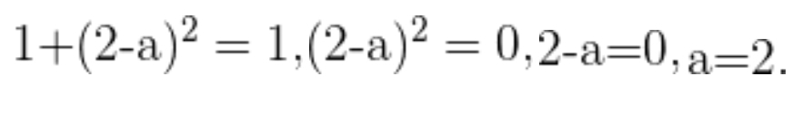

Ejercicios Propuestos
1. Calcular la distancia entre los puntos: A(2,1) y B(-3,2)

2. Clasificar el triángulo determinado por los puntos: A(4,-3) B(3,0) C(0,1)


podemos concluir que el triángulo no es equilátero, pues si lo fuera, las distancias entre cualesquiera de sus puntos serían iguales.

Por lo tanto, el triángulo es obtusangulo

3. Determinar la condición para que los puntos y disten una unidad. A(2,1) B(-3,2)

Si la distancia AB es 1 esto quiere decir que
